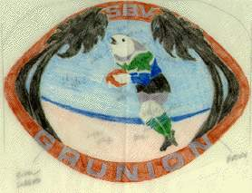
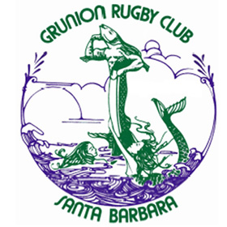
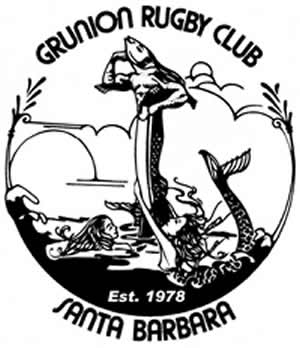
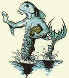
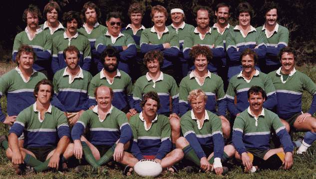

Club History
The side first played together in 1978 and formally organized as a club in 1980. What follows is straight from the club archive — the evolution of the crest, the Hall of Fame, the original team, and the constitution that has held the Grunion together for over forty years.
Evolution of the Grunion
The first known rendering of a potential logo or artwork for Grunion Memorabilia. It has been carbon dated to 1979 and although it seems innocent enough a fire storm of controversy engulfed the young Grunions as a result of this creation. The most controversial element seemed to be the tight fit on the Grunion's Rugby shorts. A certain homophobic fringe of the club objected to the bun-hugging style which they felt was further exacerbated by the pointing or "twinkle toed" posture of the Grunion. There are no surviving garments with this particular artwork. The SBV at the top refers to the fact that the club embodied Ventura as well as Santa Barbara.

We move to the Art Nouveau Period of Grunion Art common to the early eighties. Again the recurring theme of male in virility crisis is in evidence. Note the pathetic and anthropomorphic females (mermaids) reaching from the depths to embrace the Godlike "Merman". Positive elements are the sleek lines of the Merman and avoiding the tight shorts issue by deleting shorts altogether.


The Merman of the late nineties has evolved to the extent that psychologically he is more comfortable with himself. He has accepted who he is and no longer reflects an arrogant posture. His chest has deflated some with age (after all, he's twenty now). He no longer requires female validation to maintain his self esteem yet he appears vital and assertive.

Grunion Rugby Hall of Fame
Formal recognition of club member's outstanding contributions to the Grunion Rugby Club began with the selection of the Twenty Greatest Grunions to commemorate the twentieth anniversary of the club in 1998. Although all of these inductees were deserving it was recognized that many other past and present club members should be provided a process for future recognition. To that aim the club administration along with an advisory committee formulated standards and procedures for selection. Ongoing contributions of photos and information will be solicited to improve the quality and accuracy of the site as time passes.
- Mel Gregory ('78)
- Bob Riggs ('78)
- Jim Harasta ('78)
- Jim Mathis ('78)
- Frank Rizzo ('79)
- Dave Davidson ('80)
- Harry Wright ('81)
- Jerry Ball ('82)
- Mike Sexsmith ('83)
- John Maloney ('84)
- Peter Crick ('84)
- Dennis O'Day ('86)
- Russ Dalke ('86)
- Lance Laffoon ('86)
- David Brook ('87)
- Bill Judson ('88)
- Ellis Pilgrim ('88)
- Greg Millerd ('90)
- Chris Prendergast ('90)
- Mike Loader ('93)
- Tim Ahern
- Kevin Battle
- Dave Crooks
- Dana Driskel
- Ken Jacobsen ('93)
- Tony McHale
- Kurt Oeler
- Dave Short
- Greg Smales
- Jovani Tovar
- Bonnie Keinath ('87)
- Doug Lynch ('81)
- Tia Orton
- Mark Kelly
- Keric Brown
- Troy Jacobsen ('99)
- Ian Williams ('97)
- Bob Swartz
- Enrico Ferri
- D. Wren Wise
- Chad Wormser Von Barron
- Dr. Bill Galivan
- Lorri Lynch
- Lance Mason
- Andres Martinez
- Shane Todd
1978 Grunion Rugby Football Club

Back Row, left to right: Lance Mason (President), Tom Burns, Larry Ferguson, Dale Hoffman, Ray Dunning, Gary Alexander, Charles Kaska, Chris Carroll, Mike McMahan, Joe Fonte, Ernie Saenez, Bob Riggs. Middle: Ron Rohde, Gary Kittle, Mel Gregory (Coach), Andres Martinez, David Spear, John Ryan, Larry Folinsbee. Front: Jim Harasta (Captain), Bob McPhillips, Jim Rodgers (Social Secretary), Jim Mathis, Steve Bellefuille.
Match Results from 1978-79
Constitution & By-laws
Name and Constitution
The name of the organization shall be "The Grunion Rugby Football Club" and shall have it's headquarters at Santa Barbara, California.
Amendment I passed Oct. 22, 1998 Grunion AGM. We hereby reaffirm the name Grunion Rugby Football Club as our organization title. The words Grunion Rugby Football Club or Grunion Rugby Club will proceed any other designations such as: Santa Barbara or Santa Barbara/Ventura. We will be registered in this manner with the National Union, Local Union and Territory and in the National Directory.
The objects and purposes of the club are:
- the promotion, encouragement, and extension of Rugby Union football.
- to develop and maintain a high standard of competition.
- to provide an organizational vehicle for fulfilling social interaction.
Finances of the club shall be handled as follows:
- the club's income shall be obtained primarily from the dues of it's members, which shall be established prior to the beginning of each season.
- secondarily, the club shall obtain income from fund raising events.
- the club's net income shall be used for the whole or any one or more of the club's goals as shall be decided by a team vote.
Membership
The club membership shall be open to any person willing to contribute to the interests and goals of the club.
Requirements for membership are:
- payment of dues in full and by established deadline.
- involvement in club functions.
- a member will cease to be a member if at the judgment of the executive committee, the said member has failed to meet the requirements and has insufficient justification.
The membership shall consist of two forms:
Amendment II passed Oct. 22, 1998 Grunion AGM. The membership shall include a third form, "Lifetime Member" -- one who has paid an amount set by the executive committee ($250 in 1998) and open to persons meeting the following criteria: Age 35 or older or person of any age making substantial financial contributions to the club (ie sponsors). The Lifetime Member will be issued a membership card and will be entitled to:
- Free from club annual dues for life.
- All game fees waived.
- Recognized as an honored member of the Grunion RFC.
- Entitled to wear the designation "Lifetime Member" on all club memorabilia, jerseys etc.
- Eligible for discounts to club events.
The Playing Member - one who has paid his dues in full, attends practices, participates in matches, and is involved in club functions.
The Non-Playing Member - one who has paid his dues, set at half the amount of a Playing Member, and is involved in club functions.
The Executive Committee
The affairs of the club shall be administered by a committee which shall consist of elected representatives from the club's members. The number of representatives of the committee shall be fixed for each season prior to that season at the general team meeting. The committee shall serve until the following year's opening election.
The Committee shall have these responsibilities to it's members:
- to provide leadership to determine and address areas of concern, objectives, and potential problems as voiced by members of the club at the opening General Meeting.
- to provide the structure and organization necessary to meet the club's needs.
- to represent the club at Union meetings and maintain official correspondence.
- to set up a playing schedule.
- to provide a roster and schedule.
- to manage the club's finances and make reports.
- to set up and chair meetings.
- to keep records of meetings and business.
- to provide channels of communication.
- to provide fields and practice.
- to make uniforms available.
- to address issues of morale.
- to arrange post game activities and social events.
- to provide a social calendar.
- to provide a formal statement of the committee's organization detailing the breakdown of it's structure and the responsibilities of it's members. To include in that statement the objectives and methods of the Committee.
The Committee shall in particular have the following powers:
- to assess the workload for the season and to distribute the load evenly among the Committee's members according to interest and capabilities of it's members.
- to appoint a chairman to chair all meetings and maintain overview of the club's activities.
- to appoint subcommittees to deal with any affairs of the club, with such powers as the Committee may determine.
- to call for club meetings as need arises.
- to have control of the club funds.
- to expel or suspend any member for serious violations of the law or actions contrary to the interests of the club.
Amendments
This constitution may be amended by a two-thirds vote of the club members present at the club meeting. The details of any proposed amendment shall be published and circulated to the club members not less than 10 days or more than 21 days prior to the meeting. Any proposed amendment must be submitted to the Committee at least 21 days prior to the meeting at which it will be decided on.
By-Laws
The club shall propose and administer a set of by-laws which will, one: address the specific necessities of the Team or playing dimension of the club, and two; detail more fully the organization and it's process, which shall be revised on an annual basis.
The by-laws will deal with the following:
- membership
- general meetings
- Fiji time
- flakes
- social dimension
- the judicial board
- the selection process and form
Membership
Playing Member Requirements:
- fixed dues paid in full prior to first game.
- attendance at practice.
- possession of a full uniform (including socks, which are green)
- involvement in club functions.
Non-Playing Member Requirements:
- half the amount of fixed dues paid in full prior to Jan. 1 of season.
- involvement in club functions.
General Meetings
The general meetings shall be held at least twice per season. The meeting prior to the season shall be for election purposes. The meetings shall be called by the executive committee no later than 10 days and no more than 21 days prior to the meeting. A quorum shall consist of 1/3 of all members of the club. A quorum is needed before business can be conducted. The meeting shall be chaired by a member of the executive committee who will also provide the agenda for the meeting and see to it's dissemination in advance of the meeting.
The format of the meeting shall be as follows:
- the chair will call roll and briefly read the agenda items under consideration.
- each item will be taken in turn following the process of: item identification and detailing of the issue at stake, discussion, vote
- members wishing to have the floor must raise their hands until recognized by the chair.
- the vote shall be a simple "thumbs up" or "thumbs down" with a majority carrying the vote.
- disorderly conduct will be recognized by the chair and acted on.
Fiji Time
Fiji Time shall be defined as one half hour after the official time. All events shall be scheduled one half hour early. The one half hour Fiji Time period shall be the 'bullshit' period, thereby alleviating the need to bullshit during business. Abuse of Fiji Time is an offense which shall be recorded in "The Book". Abuse is cumulative and shall be judged and penalized accordingly by the judicial board.
Flakes
A "flake" shall be defined as one who:
- shirks responsibility
- fails to show
- comes late
- leaves early
- is prone to incommunicado
Flakes shall be dealt with by the judicial board. All members are responsible for being informed and are also responsible for input.
The Social Dimension
- All members are required to support the social events and hosting efforts as much as possible.
- All members shall be versed in the party manual.
- All members shall be familiar with the social calendar and give notice in advance as to their ability to support the calendar events as they come up.
- All members shall have valid excuses and shall notify the appropriate party of their inability to support. (please make it plausible).
The Judicial Board
The judicial board shall be comprised of three members appointed by the executive committee. They shall function as judges and their terms shall run for a year. Jurisdiction is restricted to the social level and areas of "slop". There shall also be a prosecuting attorney and a defense attorney similarly appointed by the committee.
The Selection Process and Committee
The selection guidelines as established by team meeting and vote are as follows:
- selectee must have paid dues in full
- must have attended practice prior to match in question or notified the selection committee of inability to attend (in advance)
- notified selection committee of status regarding health, fitness, or ability to show, etc. prior to the match date if it is an issue.
- selectors will weigh factors of fitness, experience, health, previous performance, and suitability of player to particular match needs.
- All disputes shall be directed to the selection committee.
- At all times that it is possible, players shall be selected from the ranks of the playing members.
The selection committee shall consist of 5 members.
- a) there shall be 2 forward selectors and 2 back selectors established by a team vote and to last for a period of one season.
- b) the principal selector shall be the coach who shall carry the deciding vote.
Selection results shall be made known as far in advance of the match as possible. Players shall arrive no later than one hour before the match time. Tardiness will result in the substitution of the alternate.
Preamble to the Grunion Constitution 1979-80
We, the members of the Grunion Rugby Football Club, in order to achieve a quality of enjoyment missing in our ordinary mundane and strife-ridden lives, come together through the medium of Rugby to celebrate and promote that self-evident and God-given right to enjoyment by honoring the tradition on which Rugby stands and through association with characters of diverse make up and circumstance. To this end we commit ourselves to establishing clear principles of order and insuring high drama and light relief...for ourselves, our community, and whereever else we shall be gathered and known as..."The Grunions". In short, through the medium of Rugby, we are sworn to enjoying ourselves and to being enjoyed.
Formal Statement of the 1980-81 Grunion Executive Committee
This executive committee, consisting of Jim Rodgers, Frank Rizzo, Dave Davidson, and Bob McPhillips, has as its aim the development and leadership of the Grunion Rugby Football Club. The scope of this aim, we understand, will be qualified only by the interest of the club and the surrounding community...and it's own internal capacity for effectiveness.
To this end we strive to provide:
- an efficient organizational structure
- a healthy morale
- and the basis for fielding a competitive playing unit
In the interests of organization we have restructured the executive body, composed traditionally of the Pres., The V.P., The Secretary, and The Treasurer, and developed the "Executive Committee". This committee has addressed the workload of this season at numerous meetings and defined areas of individual responsibility, which are listed below.
J.R. Rogers: leadership, organization, articulation, committee assessment, publicity, recruitment, historian, information.
Frank Rizzo: leadership, union rep., scheduling, fields & practice, social calendar, uniforms.
Dave Davidson: leadership, communication, phone calling, social calendar, transportation, post game events, minutes, billiting.
Bob McPhillips: leadership, budget/accounting, financial reports, fund raising, dues, check availability.
This restructuring was done in order to distribute the workload more evenly upon the members of the executive body and with regard to their personal interests and individual capabilities. It is experimental and will probably undergo some changes during the season, but we are optimistic about achieving our objectives and providing the members of this club with the basis for enjoying this season.